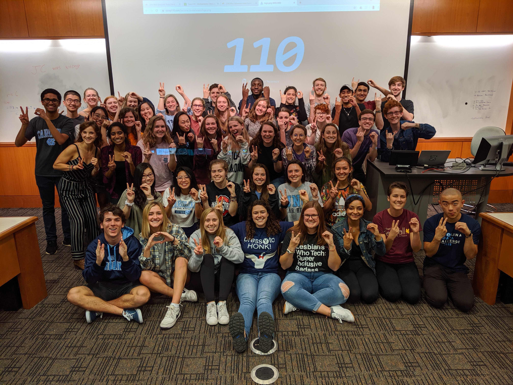

Experience

Accenture Technology Analyst Intern
June 2021 - August 2021
- As a Summer Analyst in the Technology Development Program, I worked with a data migration and conversion team for a large fin-tech acquisition and merge.
- I completed modules in Salesforce and nCino platforms, learning back end development and functionality. Some of the skills I earned in the Salesforce platform can be seen in the pie chart below!
- I completed mappings and fixed defects for meta-data in Informatica and analyzed results in SQL server for my project team. I was extremely excited about this as I felt I was contributing value to my team while also learning new skills in a platform I had never used before!
- Throughout the summer, I was able to sharpen my communicative, organizational, and management skills through tasks such as creating visuals, timelines, & slide decks, keeping records updated in excel, and participating in daily standups.
- Beyond these professional and technical skills I developed during this summer with Accenture, I was also able to grow personally. I partook in small group sessions of interns, book clubs, faith-based groups, and leadership conferences. I even participated in a virtual bake-off with the office team (pictured below)! And lastly, I was able to network with the most inspiring and dedicated employees!


Gulf Coast Bank IT Intern
July 2020 - August 2020
- As an IT Intern, I created online forms for a digital transformation project. This included both front end and back end development using PHP, Java, and HTML.
- I worked in SQL Server to query data for various bank purposes and requests. I had never worked in SQL Server before, but loved learning this new skill as it is a very important and practical one to have for many industries!
- I was able to actively and regularly engage with users of the forms I created for critical feedback, learning and practicing Scrum Agile Project Management.

COMP110 Undergraduate Teaching Assistant
Janurary 2019 - May 2022
- As a UTA of 7 semesters, I advised over 500 students in COMP110, the Introductory Computer Science course at UNC, each semester.
- I held office hours to facilitate the general understanding of concepts to students in both the CS major and in non-STEM majors and to help students work through specific problem sets.
- Some semesters, I attended the course's lectures to answer questions during class and proctor exams.
- Other semesters, I wrote worksheet questions and exercises, and helped grade projects and exams.
- One of my favorite ways to serve the class was getting to tutor students. This was time setup apart from office hours that allowed students struggling conceptually in the course the chance to catch up and learn at a pace more tailored to their needs.
- Another particular effort I loved was being a mentor to younger Undergrad Teaching Assistants who were new to the UTA team. I was able to advise them in being a UTA, as well as general knowledge about the CS major and recruiting.
